Международные B2B-продажи
Квалификация запросов, сопоставление моделей и артикулов, работа с поставщиками, коммерческие предложения, follow-up и международная логистика.
B2B Sales & Marketing · Business Development · CRM & Automation
Соединяю международные продажи, маркетинг и коммерческие процессы: от первого обращения клиента и подбора технического решения до CRM, координации команд и развития цифровых инструментов.
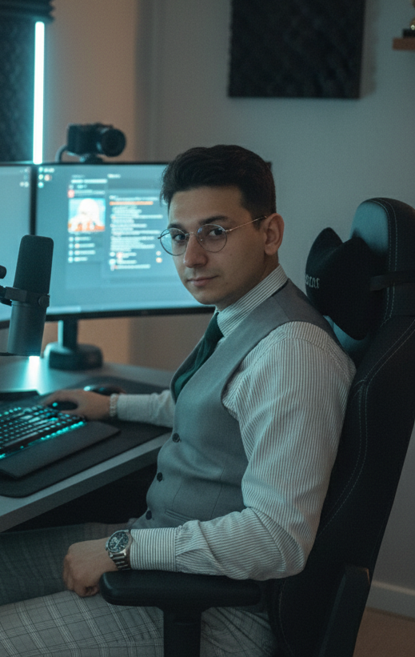
Опыт в международных запросах на промышленное оборудование, работе с поставщиками, управлении маркетинговыми проектами и совершенствовании коммерческих процессов.
Открыт к полностью удалённой работе: Россия, Беларусь, СНГ и международные компании.
Показатели отражают результаты указанных проектов и относятся к разным периодам.
Мой профессиональный опыт находится на стыке B2B-продаж, развития бизнеса, маркетинга и управления проектами. Мне интересны сложные продукты и задачи, где необходимо понять потребности клиента, сопоставить технические и коммерческие условия и организовать последовательную работу от запроса до предложения.
В RAMP Global работаю с международными обращениями по двигателям, гидравлике и комплектующим для промышленной и специальной техники. Уточняю модели, артикулы, серийные данные и комплектацию; взаимодействую с поставщиками и коллегами по вопросам цены, наличия, гарантий и логистики. Веду задачи, связанные с цифровыми каналами привлечения, CRM и качеством товарных данных.
Ранее руководил проектной группой, координировал маркетинговые подразделения и подрядчиков, участвовал в разработке программы лояльности и пользовательских кабинетов. Также занимался исследованием рынков, анализом конкурентов, медиапланированием и оценкой новых направлений бизнеса. Считаю ценным не просто внедрить инструмент, а сделать коммерческий процесс понятным и управляемым.
Четыре направления, в которых объединяю коммерческие задачи, аналитику и управление исполнением.
Квалификация запросов, сопоставление моделей и артикулов, работа с поставщиками, коммерческие предложения, follow-up и международная логистика.
Исследование рынков, конкурентов и клиентских сегментов, Google Ads, входящие лиды, маркетинговые материалы и развитие B2B-каналов.
Bitrix24, логика воронки, качество товарных данных, связь маркетинговых источников с продажами, постановка бизнес-требований и приёмка изменений.
Координация специалистов и подрядчиков, задачи и сроки, согласование этапов, бюджетные расчёты, контроль рисков и результатов.
Должности сохранены по профессиональной истории; межфункциональные обязанности описаны отдельно от официального названия роли.
Руководитель отдела маркетинга и рекламы
Февраль 2025 — настоящее время
Руководитель проектной группы
Апрель 2024 — октябрь 2024
Руководитель отдела маркетинга
Декабрь 2023 — апрель 2024
Маркетолог
Январь 2023 — ноябрь 2023
Четыре проекта с измеримыми результатами и три дополнительных кейса по международным B2B-продажам, CRM и коммерческим операциям.
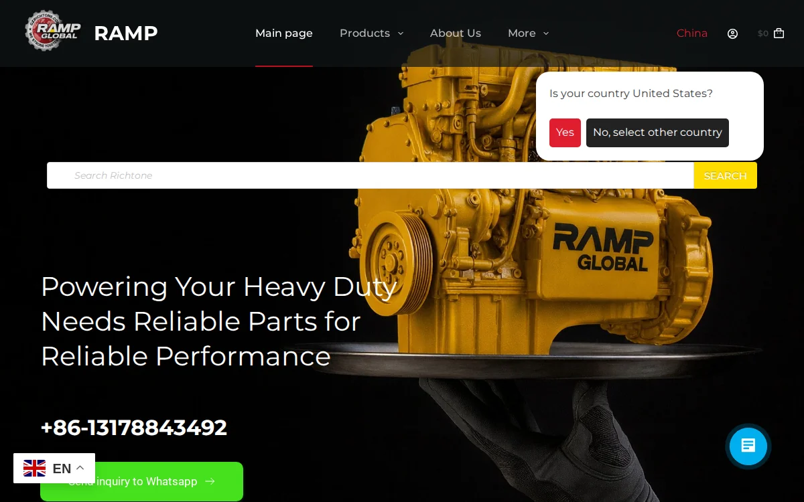
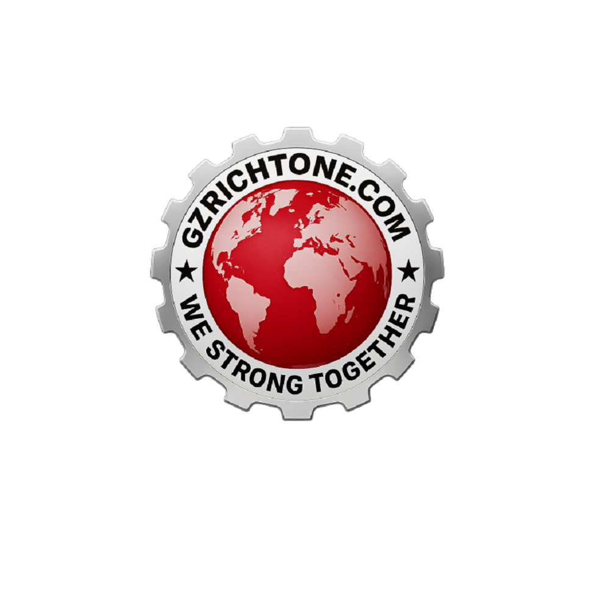
Performance Marketing / B2BРекламные кампании и аналитика для США, Канады, MENA и Восточной Европы.
Увеличить поток целевых обращений, снизить стоимость лида и связать рекламные каналы с коммерческой обработкой заявок.
Google / Meta Ads, распределение бюджетов, A/B-тесты креативов и посадочных страниц, UTM-разметка, сквозная аналитика сайта и CRM, формы, автоответы и квалификация обращений.
CPL снизился на 35% — с 650 ₽ до 420 ₽. Получено более 1 150 заявок за 3 месяца; конверсия лид → сделка достигала 18%, ROMI составил более 300%.
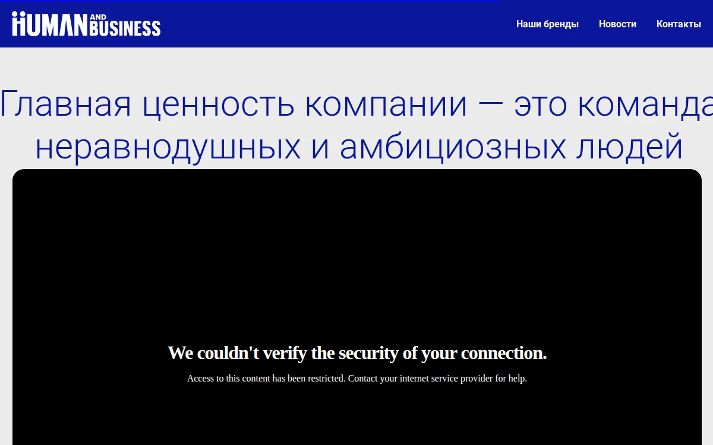
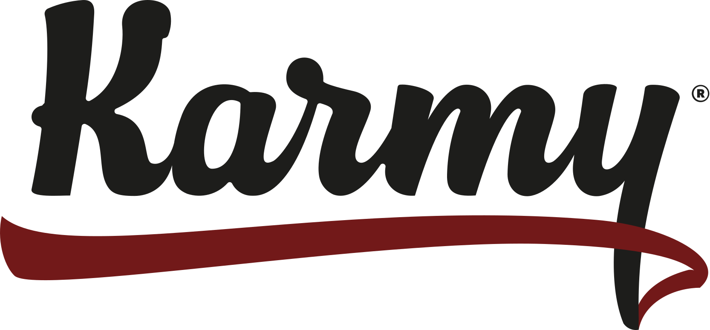
Программа лояльности / маркетингКоординация нескольких команд и цифровых инициатив для покупателей, продавцов и заводчиков.
Развить программу лояльности, клиентские сценарии и повторные покупки в нескольких категориях пользователей.
Координация SMM, трейд-маркетинга, дизайна, digital-маркетинга и подрядчиков; постановка задач, согласование личных кабинетов, бюджетные расчёты, креативы, медиапланы и сопровождение реализации.
Активность пользователей выросла на 45% за 2 месяца, повторные покупки — на 30%.
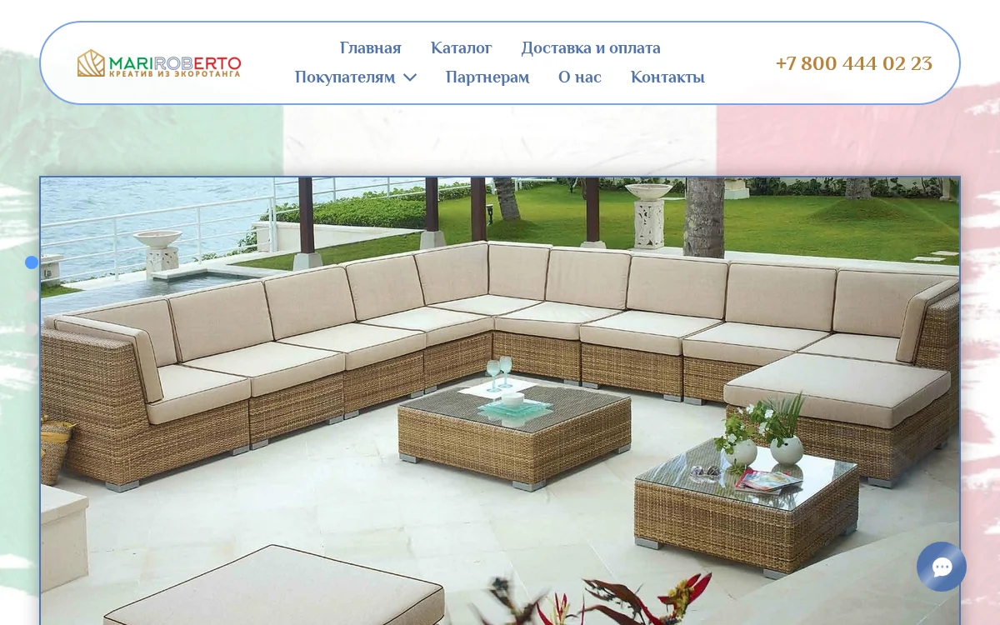
Позиционирование и развитие направлений, включая проект плетёной мебели MariRoberto.
Исследовать рынок, определить перспективные направления и повысить результативность маркетинговых активностей.
Конкурентный анализ, фокус-группы, изучение спроса, позиционирование, маркетинговая стратегия, медиапланы и PR-активности.
По результатам работы выделены три прибыльных направления, спрос вырос на 22% за квартал.
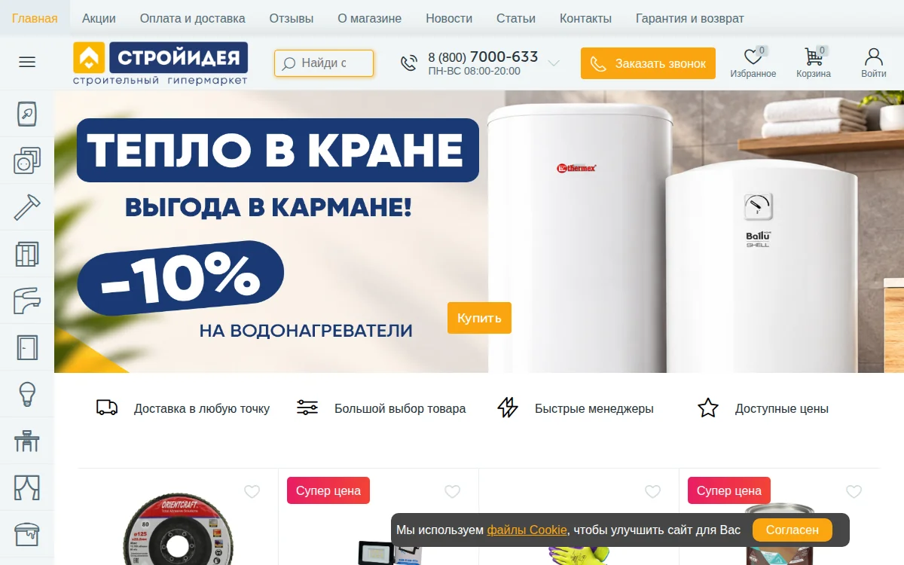
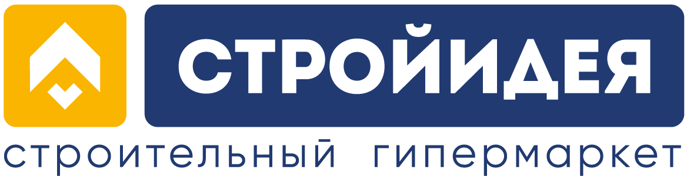
Ритейл / исследованияМаркетинговая аналитика и участие во внедрении новых технологий для розничного бизнеса.
Выявлять изменения спроса, оценивать продвижение и находить возможности развития розничного направления.
Отчётность по акциям, анализ их эффективности, мониторинг конкурентов, рекомендации по росту спроса, медиапланирование и фокус-группы.
Отмечен устойчивый рост обращений и узнаваемости бренда.
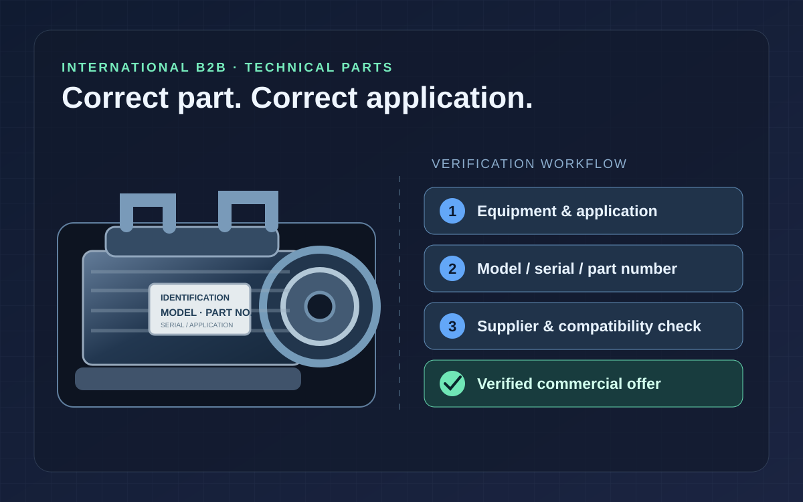
От уточнения применения и номера детали до подготовки коммерческого предложения и логистических вариантов.
Уточнить сложный запрос на двигатель, гидравлический узел или комплектующие до расчёта цены и предложения замены.
Проверка модели, серийных данных, Part Number и совместимости; запрос документов и условий у поставщиков, сравнение вариантов по цене, сроку, состоянию, гарантии и доставке.
Подготовлены технически обоснованные коммерческие варианты с учётом совместимости, сроков, гарантий и доставки; следующие шаги по запросам зафиксированы в CRM.
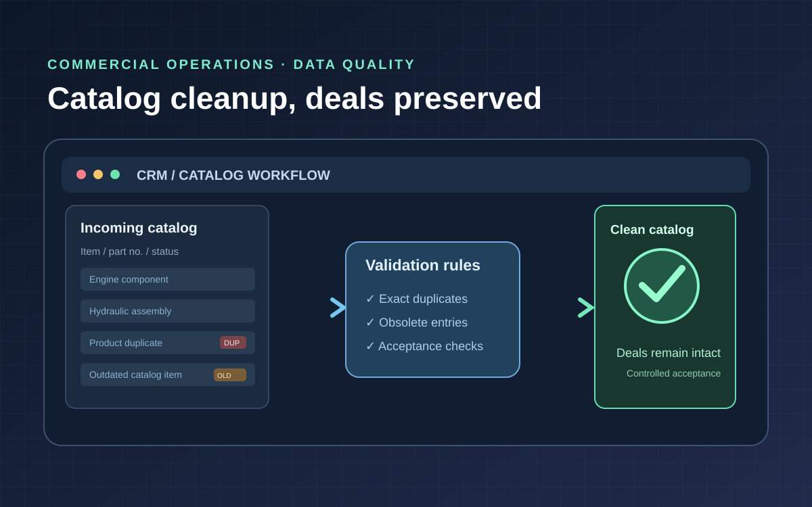
Координация требований к данным и приёмки изменений в Bitrix24 без нарушения коммерческих процессов.
Убрать устаревшие позиции и дубли из каталога, сохранив корректность действующих сделок и связанных данных.
Бизнес-требования и критерии приёмки, согласование правил очистки, резервного копирования и проверок, контроль сохранности сделок при выполнении автоматизированных операций.
Выполнен этап нормализации товарного каталога, проведена проверка сохранности действующих сделок.
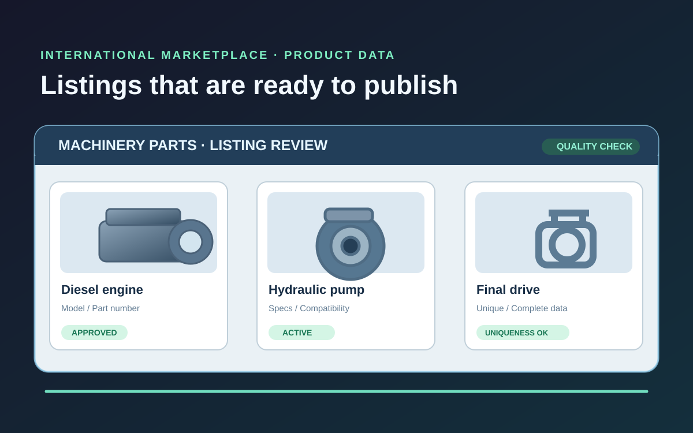
Подготовка международных карточек товаров, проверка уникальности и разграничение согласованных и активных объявлений.
Повысить пригодность карточек для международной B2B-площадки без дублей и некорректных заявлений о публикации.
Координация отбора, описаний и проверки карточек, ручного согласования, контроля уникальности и сверки статусов с данными площадки.
Систематизирована подготовка и проверка уникальности карточек. Выстроен процесс согласования и отдельного контроля активности объявлений.
Сайты и визуальные материалы компаний, с проектами которых я работал. Мои обязанности и вклад описаны в кейсах и опыте работы.
Промышленное оборудование, двигатели, гидравлика и комплектующие. Международные запросы, коммерческие процессы, CRM и цифровые каналы.
Клиентские проекты, программа лояльности, кабинеты разных категорий пользователей и координация маркетинговых подразделений.
Исследования рынка и конкурентов, фокус-группы, медиапланирование, развитие коммерческих направлений. Сохранён архивный скриншот проекта.
Исследования рынка в рознице и участие в проектах внедрения новых технологий. Визуальный пример из первоначального портфолио.
Изображения отражают внешний вид сайтов на момент подготовки материалов и могут отличаться от текущих версий.
Для профессионального общения можно написать на почту или связаться через удобный мессенджер.
WeChat-ссылка открывается на устройствах с установленным приложением. Если она не работает на компьютере, найдите контакт по указанному ID.